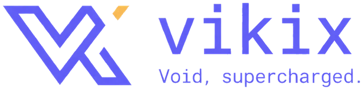

Void Linux, supercharged · version 0.25.2
Vikix.
The desktop that explains itself.
A fast, keyboard-first Linux desktop. Press one key and it tells you why that just happened, and which line did it. Ask its AI agent for a change, and it tries it on the running desktop, with an undo.
Free and open source. It installs on top of Void Linux, and you can try it in a virtual machine first, without touching Windows or macOS.


What no other desktop does
It tells you why.
A window moved by itself, a key did something you didn't expect, the layout changed under you. On every other desktop you guess. On Vikix you press one key, and the desktop says what it did, what made it do it, and which line of which file.
Why did that happen?
Super+? lists the last things the desktop did, newest first: every key, every rule, every menu entry, every command an agent ran, each with its cause and the file and line it is written at. The same thing again is one line, counted, so nothing crowds the rest out.
Pick a line and it offers the fix: open that line in your editor, take the change back, bring the window here, switch the rule off. vikix rules why says the same for one window. When something breaks.
What is this?
Super+Alt+? on anything, a window, a field of the bar, a workspace: a card with what that very thing is doing now, a short paragraph on what such a thing is, and where to read on. A fact it can't read is left out, never guessed.
21:04:10 Super+Ctrl+d ran vikix-quiet (Do not disturb on/off) · Vikix's key: registry.lisp, line 83 21:03:59 A rule, as a window opened ran (when-window (:class "Firefox") (workspace 2)) · rules.lisp:3, for Firefox "Mozilla Firefox" 21:03:40 Super+s ran user-dropterm · your key: user.lisp, line 242 › the rule, picked: Edit it rules.lisp opens at line 3 Bring that window here Switch that rule off until the next reload
The agentic desktop
An agent with hands.
Most AI lives in a chat window and tells you what to click. On Vikix the agent does it: it knows how this desktop is put together, it changes the running desktop and sees the result. It tries a key live, and keeps it only when you like it.
A snapshot first, an undo after.
Your settings are saved before every session. vikix changes shows what the agent did; vikix undo takes it back.
Several at once, in plain view.
The Office shows each agent at its desk: what it is doing, what it changed, what it is waiting for, and the questions only you can answer. Working with agents.
:: snapshot 99e03a6: before an agent session :: to see what the agent changed: vikix changes :: to take it back: vikix undo you › Switch the desktop to the vikix-dark theme, and make Super+t open a second terminal. Try the key live first, then keep it in my user.lisp. ● Skill(vikix) loaded: how this desktop is put together ● Super+t is live now. I'll save it to user.lisp so it survives a reload. ● Both changes are in place. - Theme: the desktop is on vikix-dark now. vikix theme saved the choice, so it will still be vikix-dark after you log in again. - Super+t: I bound it live first (vikix-bind "s-t" "vikix-terminal"), then added it to ~/.stumpwm.d/user.lisp and reloaded. It also shows up in the Super+F1 key help. vikix changes shows the new lines. If you want either change back, vikix undo will reverse it.
A leash that holds.
By default the agent shows each command and each edit, and waits for your yes. But your yes isn't the only guard: the desktop checks what an agent sends before any of it runs, and nothing an agent or a rule does can take the desktop down.
Every form is read before it runs.
What an agent sends to the window manager is checked against a list of what an agent may do. A form that would run a program, touch a file or change a setting is held, you are told, and none of the text runs.
A rule it writes is a proposal.
It waits in Super+m → Rules until you add it yourself. The menu opens on the rule's own line, so Enter alone adds nothing.
A failure costs one line, never the desktop.
A rule that keeps failing is switched off, not the desktop. A mistake in your own config loses that one form and asks what to do. And a stuck window manager is freed by Super+Ctrl+Alt+Escape, a key it can't block.
Keys stay out of sight.
API keys live in a folder of their own, out of your settings' history.
vikix diagnosetakes them out of the logs before an agent reads them.
New here? Start with this
Four words, explained.
If these words are new to you, here is what they mean. You don't need any of it to read on.
An operating system, like Windows or macOS.
Free, and yours to change. On a laptop it's quick, private, and has no adverts or accounts to sign up for.
One version of Linux, small and fast.
Linux comes in many versions, called distributions. Void is a simple one that starts in seconds and keeps itself up to date. You install Void first, then Vikix on top.
Windows that arrange themselves.
No overlapping windows to drag around: each new window takes its share of the screen, and you move between them with the keyboard. Strange for a day, and then everything else feels slow.
The part that arranges the windows.
The window manager Vikix uses. It can be changed while it runs, which is what lets the agent try a new key or colour at once, and lets you keep or drop it.
And the terminal? A window where you type commands instead of clicking. Vikix uses it a lot, and the agent works there, next to you.
Try it here
Tiling, in your browser.
A sketch of the desktop that answers the real keys. Click it, then press Return for a terminal, b or v to split the screen, and 1 to 3 to change workspace.
Honestly
Is Vikix for you?
Yes, if you…
- want an AI that does things on your computer, not only talks about them
- spend your day in a browser, an editor and a terminal
- want to learn how a computer works, or learn to program: twenty languages are a command away
- have a spare laptop, or are happy to try it in a virtual machine first
- like a fast machine that does only what you asked
Not yet, if you…
- never want to type a command: installing takes a few, and so do some settings
- need an installer you can click through: for now you install Void, then run two scripts
- rely on Adobe or Office (a Windows window helps with some of that), or play games whose anti-cheat refuses Linux (Steam and Proton run the rest:
vikix add steam) - want every program to match: Firefox, LibreOffice and Emacs keep their own look


See the whole gallery, in both themes, or watch the video.
And the rest
A whole desktop, in one piece.
A window manager, a bar, a launcher, a terminal, editors, notifications, screenshots, themes, backups and updates, chosen to work together and set up for you. One command, vikix update, keeps all of it current. The details are in the guide.
Say once where a window goes.
One line: (when-window (:class "Firefox") (workspace 2)). Or Super+Shift+t writes the rule for the window in front of you, from where it is now. Rules for the desktop.
One file of colours, everywhere.
StumpWM, the bar, the terminal, rofi, notifications and the lock screen follow it. This page uses the same two, and Omarchy's community themes come over in one line.
Yours are copied once, never overwritten.
Vikix's files are links an update refreshes. Yours are copied once and kept in a history of their own: vikix undo takes back any change. Making it yours.
Select text, press Super+i.
Proofread, rewrite, translate or explain it, in any program. Super+F9 types what you say. A local model by default, offline. Working with AI.
Claude Code, or another.
Codex, OpenCode, Gemini CLI, Antigravity CLI or Aider: the same guide to the desktop, the same snapshot first, and --local to keep it all on your laptop.
Twenty of them, their docs offline.
vikix add rust, or all of them. A folder each in ~/dev with small examples to build and change, and every manual searchable with no network.
Windows 11 in a window, installed by itself.
Point it at Microsoft's ISO and walk away. One Windows program can have a window of its own, tiled among yours. Windows in a window.
A window manager you can reprogram while it runs.
StumpWM is Common Lisp with Swank inside: Emacs connects and redefines anything, live. That is what lets the agent try before it writes. How it fits together.
The keys
Everything is a key away.
Super is the Vikix key. On the desktop, Super+/ shows every key at a glance, Super+F1 searches them and runs the one you pick, and Super+m opens the menu for everything else.
Get it
From plain Void to Vikix.
Install glibc Void
A plain base install from the Void download page, with a normal user who can use sudo. Installing Void for Vikix walks you through its installer, screen by screen.
Run the install, and reboot
One line. It asks for your password once, then runs by itself, from the fastest mirror it finds.
Log in on tty1
The desktop starts. Open a terminal with Super+Return.
Add what you want
A welcome opens at your first login: pick languages, editors, LibreOffice, Windows or local AI from a list, set your keyboard and a theme. Or type it:
vikix featureslists them, andvikix addinstalls them. From then on,vikix updatekeeps everything current.
$ xbps-fetch -o vikix-install https://vikix.dev/install $ bash vikix-install $ sudo reboot
A fresh Void has no curl, so this uses xbps-fetch, which comes with it. The script checks this is glibc Void, clones Vikix into ~/vikix and runs its install. Read it first: it's short. Then Your first hour.
$ vikix features # what there is $ vikix add essentials # Emacs, C, Python, Lisp
Trying it first? It runs well in a VM. The README has step-by-step notes for virt-manager and VirtualBox.
Questions
Before you try it.
Is it free?
Yes. Vikix is open source under the MIT licence, and Void Linux is free too. The one thing that can cost money is the AI: Claude Code needs a Claude subscription or an API key from Anthropic. The local models from vikix ai setup are free, and run on your own laptop, only more slowly.
Will it erase Windows?
Vikix itself never touches your disks. Installing Void does: Void's installer asks which disk to use, and it wipes that one. So try it in a virtual machine first (a computer inside a window, on your current system), or on a spare laptop. The README has step-by-step notes for VirtualBox on Windows and virt-manager on Linux; a machine with 4 GB of memory is enough for the desktop.
What does the AI see?
Nothing, until you start it. The agent runs in a terminal when you press Super+a, and it shows each command and edit and waits for your yes. What it reads goes to Anthropic, as with any Claude Code session. With a local model, nothing leaves your laptop. API keys have a place of their own, kept out of your settings' history.
Do I need to know Lisp, or Linux?
No. Keys and menus cover the everyday things: Super+/ shows every key, and Super+m opens a menu for the rest. When you want something changed, you can ask the agent in plain words. Lisp is there when you're curious. And the guides come with it: info vikix in a terminal or in Emacs, or Super+m → Vikix guide in the browser, with diagrams.
How is it different from Omarchy?
Omarchy, a desktop for Arch Linux, was the inspiration: a whole desktop, set up in one go, with opinions. Vikix goes its own way: Void instead of Arch, StumpWM instead of Hyprland, an agent built in with snapshots and an undo, and a desktop that can say why it did what it did. Why Void, for Linux people.
What if something breaks?
vikix doctor checks that everything is in place and says what to do. vikix undo takes back your last settings change. Super+? says what just happened. And you can ask in Discussions, or open an issue.
Made by
Hi, I am The Vikid Truth.
I build Vikix for my own laptop, and share it so you can have it too. I also write on Substack. If you like Vikix, follow me there.
Questions or ideas? Ask in Discussions. Something broken? Open an issue. Or just say hi on X, @vukini. For anything else, and security problems you'd rather not post in public, write to vikid@vikix.dev.